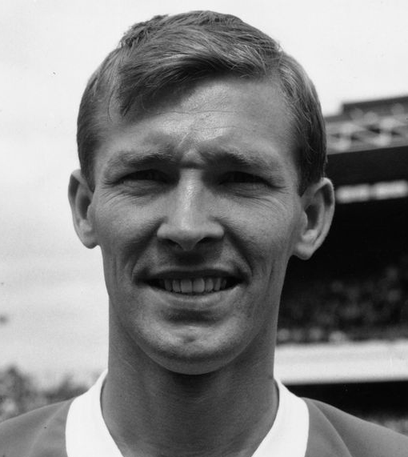
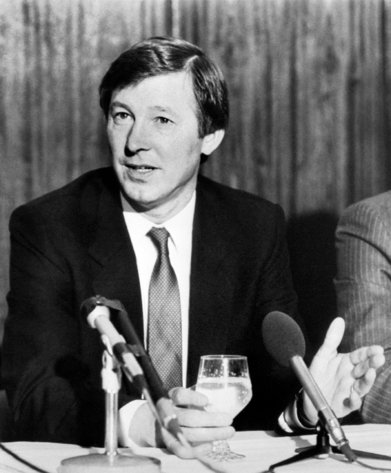
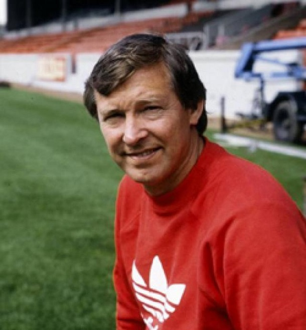

 Ferguson's playing career began as an amateur with Queen's Park, where he made his debut as a striker aged 16. He described his first match as a "nightmare", but scored Queen's Park's goal in a 2–1 defeat against Stranraer. Perhaps his most notable game for Queen's Park was the 7–1 defeat away to Queen of the South on Boxing Day 1959 when ex-England international Ivor Broadis scored four of the Queen of the South goals. Ferguson was the solitary Queen's Park goalscorer. Despite scoring 20 goals in his 31 games for Queen's Park, he could not command a regular place in the side and moved to St. Johnstone in 1960. Although he continued to score regularly at St. Johnstone, he was still unable to command a regular place and regularly requested transfers. Ferguson was out of favour at the club and he even considered emigrating to Canada, however St. Johnstone's failure to sign a forward led the manager to select Ferguson for a match against Rangers, in which he scored a hat-trick in a surprise victory. Dunfermline signed him the following summer (1964), and Ferguson became a full-time professional footballer. The following season (1964–65), Dunfermline were strong challengers for the Scottish League and reached the Scottish Cup Final, but Ferguson was dropped for the final after a poor performance in a league game against St. Johnstone. Dunfermline lost the final 3–2 to Celtic, then failed to win the League by one point. The 1965–66 season saw Ferguson notch up 45 goals in 51 games for Dunfermline. Along with Joe McBride of Celtic, he was the top goalscorer in the Scottish League with 31 goals. He then joined Rangers for £65,000, then a record fee for a transfer between two Scottish clubs. He was blamed for a goal that they conceded in the 1969 Scottish Cup Final, in a match in which he was designated to mark Celtic captain, Billy McNeill, and was subsequently forced to play for the club's junior side instead of for the first team. According to his brother, Ferguson was so upset by the experience that he threw his losers' medal away. There have been claims that he suffered discrimination at Rangers after his marriage to a Catholic, Cathy Holding, but Ferguson himself makes it clear in his autobiography that Rangers knew of his wife's religion when he joined the club and that he left the club very reluctantly, due to the fall-out from his alleged cup final mistake.
 Ferguson joined Aberdeen as manager in June 1978, replacing Billy McNeill who had only managed the club for one season before he was offered the chance to manage Celtic. Although Aberdeen were one of Scotland's major clubs they had won the league only once, in 1955 under Dave Halliday. The team had been playing well, however, and had not lost a league match since the previous December, having finished second in the league the previous season.Ferguson had now been a manager for four years, but was still not much older than some of the players and had trouble winning the respect of some of the older ones such as Joe Harper. The season did not go especially well, with Aberdeen reaching the semi-final of the Scottish Cup and the Scottish League Cup Final, but losing both matches and finishing fourth in the league. Aberdeen lost the 1979–80 Scottish League Cup Final, this time to Dundee United after a replay. Ferguson took the blame for the defeat, saying he should have made changes to the team for the replay. Aberdeen had started the 1979–80 season poorly but their form improved dramatically in the new year and they won the Scottish league that season with a 5–0 win on the final day. It was the first time in fifteen years that the league had not been won by either Rangers or Celtic. Ferguson now felt that he had the respect of his players, later saying "That was the achievement which united us. I finally had the players believing in me". He was still a strict disciplinarian, though, and his players nicknamed him Furious Fergie. He fined one of his players, John Hewitt, for overtaking him on a public road, and kicked a tea urn at the players at half time after a poor first half.He was dissatisfied with the atmosphere at Aberdeen matches, and deliberately created a 'siege mentality' by accusing the Scottish media of being biased towards the Glasgow clubs, to motivate the team.The team continued their success with a Scottish Cup win in 1982. Ferguson was offered the manager's job at Wolverhampton Wanderers but turned it down as he felt that Wolves were in trouble and "[his] ambitions at Aberdeen were not even half fulfilled".
 Managerial Ferguson was made an Inaugural Inductee of the English Football Hall of Fame in 2002 in recognition of his impact on the English game as a manager. In 2003, Ferguson became an inaugural recipient of the FA Coaching Diploma, awarded to all coaches who had at least ten years' experience of being a manager or head coach. He is the Vice-President of the National Football Museum, based in Manchester,and a member of the Executive Committee of the League Managers Association. In addition to being the only manager to win the top league honours, and the 'Double', north and south of the England–Scotland border (winning the Premier League with Manchester United, and the Scottish Premier Division with Aberdeen), he is also the last manager to win the Scottish championship with a non Old Firm team, achieving this in the 1984–85 season with Aberdeen. He is also the only manager in English football to have managed to finish in the top three league places in 20 consecutive seasons, since the 1991–92 season (with a total of 22 consecutive seasons). On 5 November 2011, the Old Trafford North Stand was officially renamed the Sir Alex Ferguson Stand in honour of his 25 years as manager of Manchester United.He has won 49 trophies as a manager, making him the most successful British football manager in history. On 5 November 2011, the Old Trafford North Stand was officially renamed the Sir Alex Ferguson Stand in honour of his 25 years as manager of Manchester United. He has won 49 trophies as a manager, making him the most successful British football manager in history.Trophyes: Premier League (13): 1992–93, 1993–94, 1995–96, 1996–97, 1998–99, 1999–2000, 2000–01, 2002–03, 2006–07, 2007–08, 2008–09, 2010–11, 2012–13 FA Cup (5): 1989–90, 1993–94, 1995–96, 1998–99, 2003–04 UEFA Champions League (2): 1998–99, 2007–08 UEFA Cup Winners' Cup (1): 1990–91 UEFA Super Cup (1): 1991 Intercontinental Cup (1): 1999 FIFA Club World Cup (1): 2008